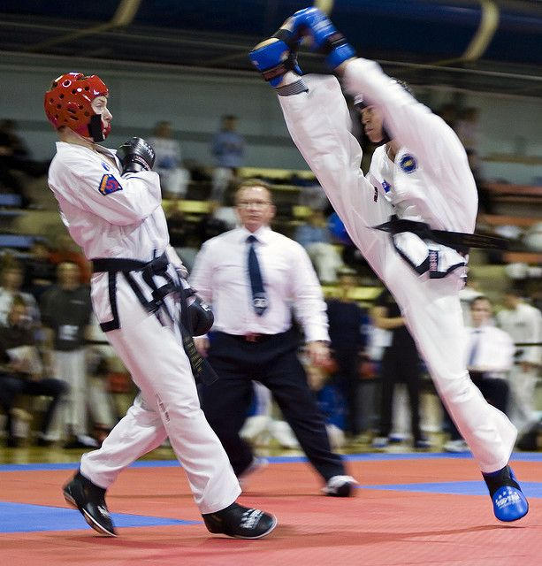

Combate

El objetivo principal del combate es lograr una ventaja de puntuación sobre un oponente. El combate se
realiza de forma dinámica con semicontacto. Esto significa que las técnicas de ataque que tienen un
contacto excesivo se castigan con puntos negativos.
En el caso de que un competidor incapacite al otro para continuar el combate debido al uso de técnicas
ilegales, él o ella puede ser descalificado.
La seguridad de nuestros atletas durante la competencia de sparring es de suma importancia, por lo
tanto, los competidores deben usar equipo de seguridad oficial aprobado que, al tiempo que protege sus
extremidades, también suaviza el contacto con su oponente.
Este elemento sigue la filosofía y el principio principal de Taekwon-Do ITF que fomenta la superación
personal y nuestro principal objetivo de salud y seguridad.
Reglamento en Lucha
 Los competidores deben portar correctamente el dobok homologado por ITF, el cual
consiste en una chaqueta, pantalón y cinturón,
de los cuales la chaqueta va abierta y lleva bordados en la espalda, además de en los laterales del
pantalón
Los competidores deben portar correctamente el dobok homologado por ITF, el cual
consiste en una chaqueta, pantalón y cinturón,
de los cuales la chaqueta va abierta y lleva bordados en la espalda, además de en los laterales del
pantalón
Los competidores deben mostrar respeto a través del saludo a su oponente, árbitro y a
los jueces que supervisan el encuentro.
Se otorgan puntos a los competidores cuando conectan correctamente en la cabeza o el
torso de su oponente, ataques que están permitidos, los cuales les otorgan, uno, dos o tres puntos.
Un punto: por golpes de puño a alguna de las áreas permitidas.
Dos puntos: por patada media al torso.
Tres puntos: por patada a la cabeza.
Cabe aclarar que los golpes solo están permitidos para la parte frontal del cuerpo,
yendo de la cintura a la cabeza.
Una de las grandes diferencias entre la ITF y la WTF es el golpe de puño a la cara, ya
que la ITF sí lo permite, mientras que está prohíbo en la WTF.
Y aunque en apariencia el Taekwon-do ITF permite mayor rudeza, también tiene sus límites
acompañados de penalizaciones.
Comenzando por los avisos o advertencias por salir del área de competición, por perder
el equilibrio y caer, o por evitar el combate. Tres advertencias suponen un punto menos para el
competidor.
Además, están las faltas que restan un punto al infractor, como golpear intencionalmente
al oponente en zonas prohibidas o técnicas no permitidas.
Por ejemplo, golpear detrás de la cabeza, agarres, luxaciones, barridos o proyecciones,
fuerza o contacto excesivo, actitud o gestos antideportivos y golpes fuera de tiempo.
Cualquier anormalidad disciplinaria o conducta notoriamente perjudicial al desarrollo del
torneo, será sancionada con la expulsión automática del mismo.
Los arvitros y jueces deberan llevar puesto obligatoriamente Pantalón azul o negro, chomba
negra, calzado negro Para Torneo Oficiales. Otra indumentaria propuesta por la Organización podrá ser usada
de acuerdo al tipo de Torneo.
Protectores Obligatorios: Padts (pie-mano),Rojo y Azul, inguinal, bucal
Opcionales: Tibial. Cabezal, Cabezal con reja, protector de antebrazo, protector de pecho
femenino y vendaje ( salvo prescripción medica ) Otros autorizados por la Organización.
Las Categorias son:
PRE-MINI 4 y 5 años ( mixta ) Gups únicamente.
MINI 6 y 7 años (mixta) Gups únicamente.
INFANTILES 8 y 9 años (mixta) Gups únicamente.
MENORES 10 y 11 años (mixta) Gups y Danes
PRE-JUVENILES 12 y 13 años Gups y Danes
JUVENILES A 14 a 15 años (varones y mujeres) Gups y Danes.
JUVENILES B 16 a 17 años ( varones y mujeres ) Gups y Danes